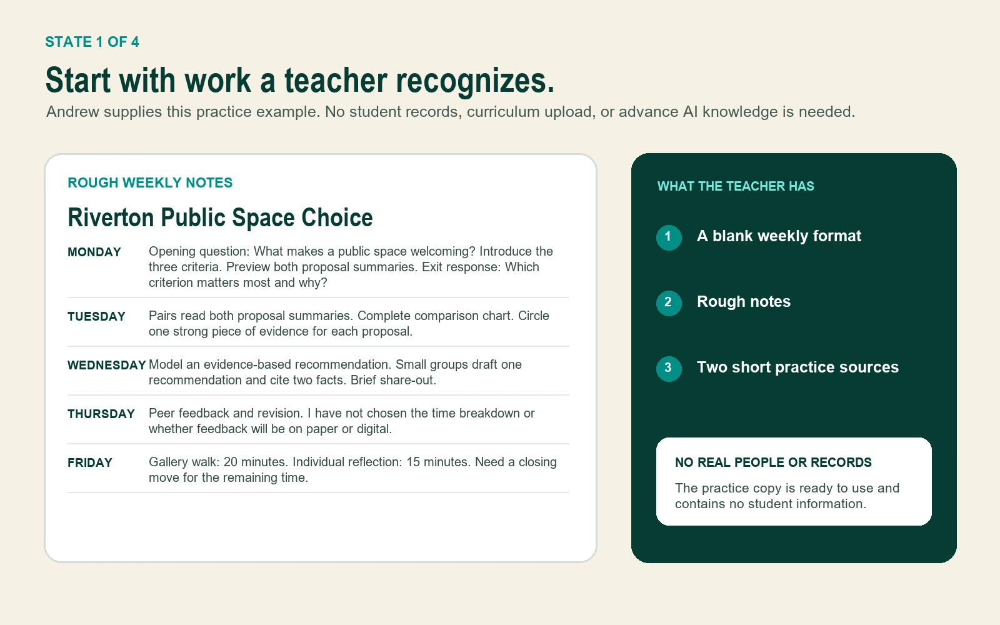

For schools that want AI to reduce work, not add to it
Give teachers back time. Build one useful AI assistant in 90 minutes.
Bring one recurring task. Andrew guides your staff through building and testing a reusable assistant inside the AI tool your school already allows.
- No coding
- No real student information
- No previous AI experience
THE FINISHED PRODUCTWeekly Lesson Setup Assistant

See the result before the method
This is what a teacher actually builds.
Follow one realistic example from rough notes to a reviewed weekly plan. Andrew supplies the practice material, so no one needs to prepare a lesson or use real student information.
1 of 4Start with rough notes

WEEKLY LESSON SETUP ASSISTANT
Step 1 of 4
The assistant prepares.The teacher decides.
A guided 90-minute build
Build something useful without learning AI first.
Teachers follow one small decision at a time. They do not need to study AI, memorize prompts, or prepare materials before the lab.
Before the build
Step 1 of 6
See the finished product first.
Andrew shows the same Weekly Lesson Setup Assistant teachers will build. The outcome is concrete before anyone opens an AI tool.
TEACHER DOESNames one part of the example that would reduce repeated work.
The setup teachers save
Five questions in plain language.
No one needs to know the word “prompt.” Each answer becomes one visible part of the assistant.
- Help me with
- Turn my rough weekly lesson notes into my weekly lesson format.
- Use only
- The blank format, rough notes, and practice summaries I provide for this task.
- Return
- Objectives, materials, timing, directions, check questions, and decisions still needed.
- Stop and ask if
- A required fact, material, or timing choice is missing.
- I will review
- Accuracy, appropriateness, alignment, missing information, accessibility, and final wording.
THE BUILT-IN BOUNDARYUse only the text or files I give you for this task. If the information is not there, mark NEEDS TEACHER INPUT instead of guessing.
Four-question safety practice
Try the decisions teachers rehearse.
This is a practice quiz, not a legal review. Choose the safer move. A visual explanation appears when the safer answer is selected.
QUESTION 1 OF 4Which account?
Before teachers open an AI tool, what must the school name?
BEFORE THE LABWhich tool?
Which staff account?Leadership names both.
Which staff account?Leadership names both.
READY FOR THE LABTool and staff account confirmedTeachers do not create workaround accounts.
A teacher replaces a student's name with “Student A.” Is the information automatically safe to enter?
Student AExact ageRare diagnosisSmall programSpecific incident
ASK THE SCHOOL FIRSTA code name is not automatic de-identification.Combinations of details can still point to one student.
The lesson notes do not include Thursday's timing. What should the assistant do?
THURSDAY TIMINGInformation not provided
ASSISTANT STOPSNEEDS TEACHER INPUTThe gap stays visible instead of becoming a guess.
The result looks polished. Who decides whether it is accurate and ready to use?
AccuracyAppropriatenessAlignmentMissing information
TEACHER REVIEWCorrect. Complete. Decide.The assistant prepares. The teacher decides.
Choose an answer to reveal the explanation.
Exactly what happens before and after
The learning curve is Andrew's job, not the teachers'.
Teachers arrive with a laptop and one annoying repeated task. Andrew and school leadership handle the structure around them.
Andrew + leadership
Name the exact tool and staff account, review local rules, select the cohort, and choose one school contact for questions.
Andrew + teachers
See the example, choose one task, build the five-part setup, practice safely, review a result, and save the assistant.
Andrew + leadership
Review what teachers built, what caused confusion, what saved time, and which later uses need specialist review.
Andrew brings
- The finished Weekly Lesson Setup example
- Practice notes and source material
- The five-part setup method
- Safety and review practice
- Participant workbook and follow-up guide
Teachers bring
- A laptop
- Access to the school-named tool, if available
- One recurring task they personally do
- Curiosity, skepticism, or both
Teachers leave with
- One tested assistant setup
- One reviewed result
- A visible boundary for missing information
- A two-week keep, revise, or stop test
Founding school pilot
One cohort. One complete build. One clear next decision.
This is a bounded pilot for schools that want teachers to experience a useful, carefully structured first win before expanding anything.
NYC IN-PERSON OR LIVE VIRTUAL$1,500
8 to 20 educators
Included in the pilot
- 45-minute leadership setup
- 90-minute guided teacher lab
- All participant and leadership materials
- 30-minute follow-up
- A documented keep, revise, or stop decision
OPTIONALSecond same-day cohort$750
Discuss a founding pilotPlain promise: Andrew does not promise a fixed number of hours saved. Teachers measure normal time against assistant time plus correction and review time.
Why time back is a credible opportunity
Brooklyn, New York
Why Andrew
Teaching experience meets practical systems work.
Andrew is a former Indiana classroom educator, curriculum and program builder, nonprofit founding partner, and human-led workflow designer. He knows the difference between a polished demo and something people can actually use in a busy room.
The lab teaches a repeatable build and review method. School policy, privacy, legal, cybersecurity, special-education, labor, and other regulated decisions remain with school leadership and qualified specialists.
Meet Andrew and see the work in contextQuestions a thoughtful school should ask
Clear answers before anyone says yes.
What if our teachers have never used AI or feel intimidated by it?
That is the intended starting point. Andrew shows the finished product first, avoids prompt jargon, reveals one step at a time, and supplies the practice material. Teachers do not need to study AI before the lab.
What does a teacher need to prepare?
A laptop and one recurring task they personally perform. They do not need to prepare a prompt, lesson packet, or sample student work. If the school has named an AI tool and staff account, teachers should have access before the lab.
Does this work with ChatGPT, Microsoft Copilot, Google Gemini, or MagicSchool?
The five-part setup is platform-neutral. The live build uses the exact tool and staff account the school has chosen. Features differ, so Andrew confirms the platform during the leadership setup and adapts the demonstration to it.
What if the school has not chosen an AI tool or staff account?
The leadership setup identifies that gap. The session can become a demonstration and planning conversation, but teachers will not be directed to create personal workaround accounts or enter school material into an unconfirmed tool.
Can a teacher use coded IDs to analyze individual student work, trends, or groups?
Replacing a name with “Student A,” initials, or a key ID does not automatically make information safe. Other details or combinations of details may still identify a student. That use is outside the introductory lab and should be evaluated by the school's privacy, legal, cybersecurity, special-education, labor, and instructional leaders before any data is entered. It may become a later, separately scoped professional-learning topic after those decisions are made.
What happens when the assistant is wrong?
Teachers practice finding a planted factual error and correcting it. They also add a boundary that tells the assistant to mark missing information as NEEDS TEACHER INPUT. Every result still requires teacher review before use.
Are the facilitator documents and agent files public downloads?
No. The sales page shows the finished example so buyers can understand the offer. The participant, leadership, facilitation, agent, and implementation materials are delivered as part of the pilot or a separately agreed engagement.
Is this legal, privacy, or compliance training?
No. It is practical professional learning built around safer habits and human review. School policy and regulated decisions remain with school leadership and qualified specialists.
Start with the work teachers want back
What do your teachers keep rebuilding?
Use the 20-minute fit conversation to name the repeated workload, confirm what the school has already decided, and determine whether one cohort is the right next step.